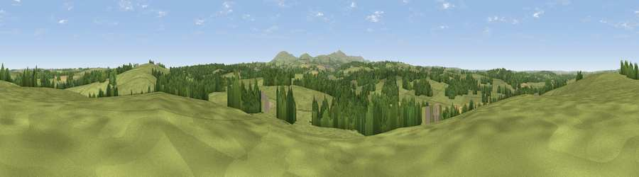

Viewpoint near Exbourne
#31283 in England · top 63% of its area beats it · near ExbourneThe view, rendered

A 360° render of this exact spot computed from the terrain model, tree cover and land cover — summer colours, afternoon light, calibrated against photographs of famous viewpoints. Real trees, hedges and buildings will differ in detail.
The panorama
Grey silhouette: terrain skyline in each direction (720 bearings, Earth curvature and refraction included). Dashed green: skyline with trees (+15 m) and buildings (+8 m) as obstacles. Blue strip: how far the ground is visible on each bearing.
Where the view opens
Wedge length = distance to the farthest visible ground on that bearing (vegetation-aware). Rings at 10, 25 and 50 km.
What fills the view
74% grassland · 21% woodland · 5% cropland ·
Angular shares of the visible panorama (visual magnitude), not map area. Landscape diversity 0.33 (0–1 Shannon).
Key numbers
More beautiful places nearby
The staircase of upgrades: each row has a higher view potential than everything closer. Driving times are estimates from straight-line distance, calibrated against real road routing — check an actual route before setting out.
| Place | Direction | Drive | Score |
|---|---|---|---|
| Sampford Hill | E · 2 km | ~6 min | 57.0 |
| Viewpoint near Folly Gate | SW · 3 km | ~8 min | 57.2 |
| Viewpoint near Folly Gate | SSW · 5 km | ~10 min | 57.9 |
| Viewpoint near Belstone | SSE · 5 km | ~11 min | 58.3 |
| Viewpoint near Sticklepath | SSE · 5 km | ~12 min | 63.8 |
| Viewpoint near Bondleigh | NE · 7 km | ~15 min | 64.0 |
| Viewpoint near Sticklepath | SSE · 8 km | ~17 min | 73.5 |
| Viewpoint near South Zeal | SSE · 10 km | ~19 min | 75.0 |
50.79189, -3.98449 · source: screening · position refined by local search. Computed location — check access rights before visiting.